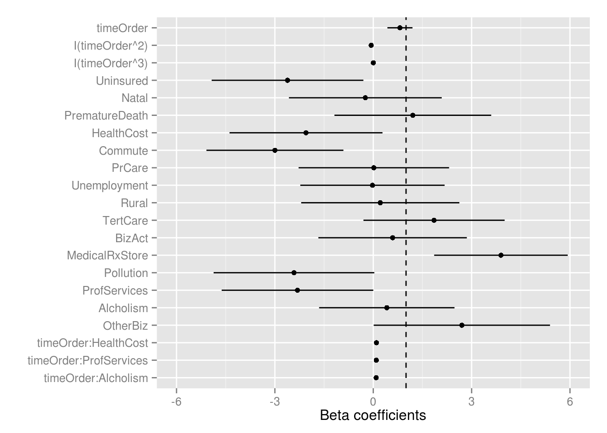
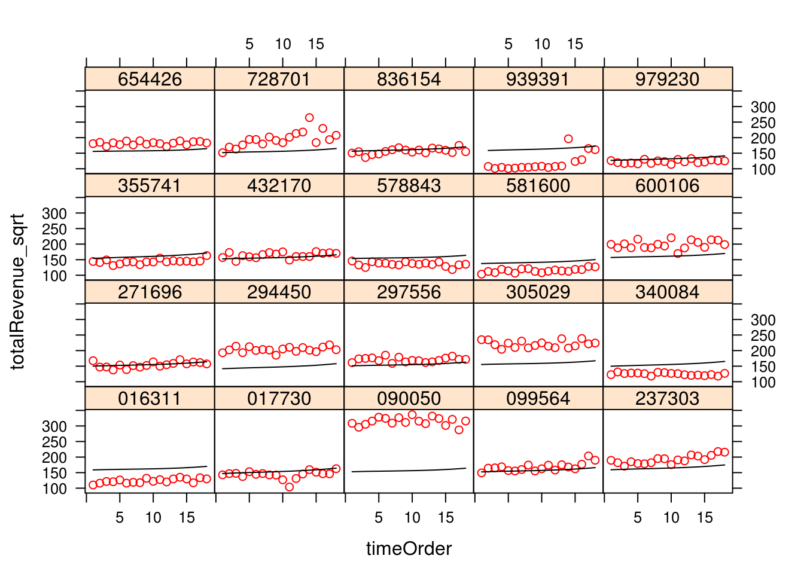
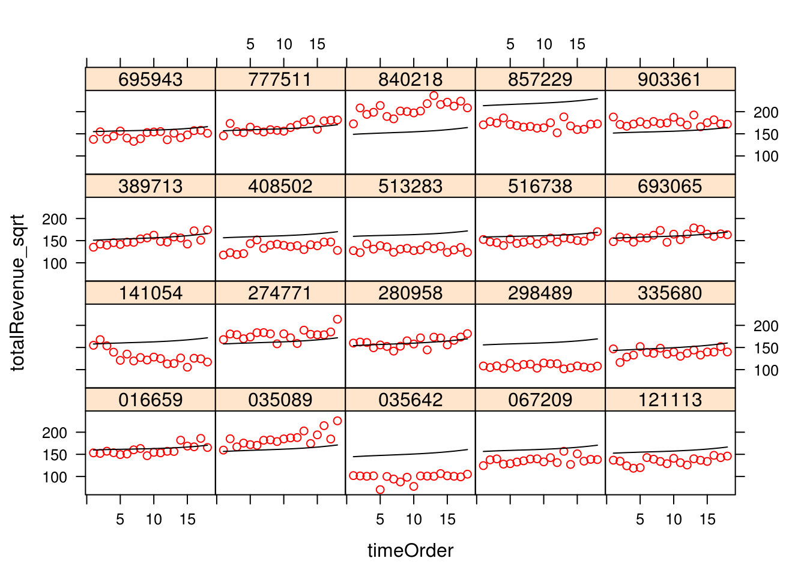

Set paths and load dependencies
## [1] "/mnt/hgfs/projects/insight/models/hlm_fa_sqrt"## Loading required package: nlme
## Loading required package: lattice
## Loading required package: latticeExtra
## Loading required package: RColorBrewerUse data matrix generated from FA and processed in ../glmmlasso_fa/datamat.Rmd
## Loading objects:
## trnMat
## tstMat
## tstStore
## datamatLevel 1: monthly revenue
Level 2: store level
Significant factors: timeOrder, MedicalRxStore, Uninsured, Commute, OtherBiz, Pollution, ProfServices, TertCare #### Intercept as outcome model
#Formulate model
varString=paste(colnames(trnMat)[2:16],collapse=" + ")
formulaString=paste0("totalRevenue_sqrt ~ timeOrder + ",varString)
formulaString## [1] "totalRevenue_sqrt ~ timeOrder + Uninsured + Natal + PrematureDeath + HealthCost + Commute + PrCare + Unemployment + Rural + TertCare + BizAct + MedicalRxStore + Pollution + ProfServices + Alcholism + OtherBiz"mod_intAsOutcome=lme(as.formula(formulaString),
random=~timeOrder|storeID,data=trnMat,
na.action=na.omit,control=list(opt="optim"))
summary(mod_intAsOutcome)## Linear mixed-effects model fit by REML
## Data: trnMat
## AIC BIC logLik
## 141562.8 141726.4 -70760.42
##
## Random effects:
## Formula: ~timeOrder | storeID
## Structure: General positive-definite, Log-Cholesky parametrization
## StdDev Corr
## (Intercept) 33.121902 (Intr)
## timeOrder 1.031108 0.01
## Residual 10.625228
##
## Fixed effects: as.formula(formulaString)
## Value Std.Error DF t-value p-value
## (Intercept) 151.98346 1.062488 16809 143.04486 0.0000
## timeOrder 0.69831 0.036136 16809 19.32443 0.0000
## Uninsured -2.62434 1.183003 982 -2.21837 0.0268
## Natal -0.22012 1.191332 982 -0.18476 0.8535
## PrematureDeath 1.18701 1.222451 982 0.97101 0.3318
## HealthCost -1.89453 1.191809 982 -1.58963 0.1122
## Commute -3.01332 1.068169 982 -2.82101 0.0049
## PrCare 0.02966 1.173468 982 0.02528 0.9798
## Unemployment -0.02012 1.125438 982 -0.01788 0.9857
## Rural 0.21589 1.233516 982 0.17502 0.8611
## TertCare 1.84887 1.101072 982 1.67916 0.0934
## BizAct 0.58362 1.157813 982 0.50407 0.6143
## MedicalRxStore 3.88554 1.041217 982 3.73173 0.0002
## Pollution -2.42801 1.253224 982 -1.93741 0.0530
## ProfServices -2.18621 1.181517 982 -1.85034 0.0646
## Alcholism 0.54397 1.054701 982 0.51576 0.6061
## OtherBiz 2.71778 1.374758 982 1.97691 0.0483
## Correlation:
## (Intr) tmOrdr Unnsrd Natal PrmtrD HlthCs Commut PrCare
## timeOrder -0.051
## Uninsured 0.008 0.000
## Natal -0.007 0.000 -0.164
## PrematureDeath 0.010 0.000 -0.059 -0.198
## HealthCost 0.007 0.000 -0.006 -0.247 -0.083
## Commute -0.005 0.000 -0.115 -0.066 0.089 -0.013
## PrCare -0.003 0.000 0.122 -0.206 0.019 0.186 -0.168
## Unemployment 0.000 0.000 -0.069 -0.147 -0.079 -0.134 -0.061 0.023
## Rural -0.004 0.000 0.219 -0.020 -0.104 -0.065 0.110 0.028
## TertCare -0.014 0.000 -0.073 -0.037 -0.070 0.016 -0.010 0.049
## BizAct 0.010 0.000 0.081 -0.022 -0.005 -0.111 -0.031 0.054
## MedicalRxStore 0.009 0.001 -0.043 0.031 0.012 -0.073 0.020 0.026
## Pollution -0.015 0.000 0.107 0.018 0.162 -0.126 0.009 -0.082
## ProfServices 0.004 0.000 0.140 -0.023 0.121 0.014 -0.106 -0.132
## Alcholism 0.007 0.000 0.051 0.076 0.025 0.069 0.046 -0.012
## OtherBiz 0.014 0.000 0.127 0.059 0.182 0.102 -0.032 -0.033
## Unmply Rural TertCr BizAct MdclRS Polltn PrfSrv Alchls
## timeOrder
## Uninsured
## Natal
## PrematureDeath
## HealthCost
## Commute
## PrCare
## Unemployment
## Rural 0.113
## TertCare 0.028 -0.114
## BizAct 0.013 0.039 -0.305
## MedicalRxStore -0.020 -0.020 0.096 -0.043
## Pollution -0.082 0.213 -0.005 0.099 0.042
## ProfServices -0.036 0.196 -0.069 0.136 0.010 -0.030
## Alcholism 0.099 -0.051 -0.072 -0.007 0.020 0.014 0.105
## OtherBiz 0.057 0.165 -0.060 0.040 0.001 -0.124 -0.118 0.106
##
## Standardized Within-Group Residuals:
## Min Q1 Med Q3 Max
## -15.0612709 -0.5008510 -0.0310162 0.4751493 15.2031016
##
## Number of Observations: 17808
## Number of Groups: 998Significant factors: timeOrder, MedicalRxStore, Uninsured, Commute, OtherBiz, Pollution, ProfServices, HealthCost, TertCare, timeOrder:HealthCost, timeOrder:ProfServices, timeOrder:Alcholism
varString2=paste0("timeOrder*",colnames(trnMat)[2:16],collapse=" + ")
formulaString2=paste0("totalRevenue_sqrt ~ ",varString2)
formulaString2## [1] "totalRevenue_sqrt ~ timeOrder*Uninsured + timeOrder*Natal + timeOrder*PrematureDeath + timeOrder*HealthCost + timeOrder*Commute + timeOrder*PrCare + timeOrder*Unemployment + timeOrder*Rural + timeOrder*TertCare + timeOrder*BizAct + timeOrder*MedicalRxStore + timeOrder*Pollution + timeOrder*ProfServices + timeOrder*Alcholism + timeOrder*OtherBiz"mod_slopeAsOutcome=lme(as.formula(formulaString2),
random=~timeOrder|storeID,data=trnMat,
na.action=na.omit,control=list(opt="optim"))
summary(mod_slopeAsOutcome)## Linear mixed-effects model fit by REML
## Data: trnMat
## AIC BIC logLik
## 141641.2 141921.5 -70784.59
##
## Random effects:
## Formula: ~timeOrder | storeID
## Structure: General positive-definite, Log-Cholesky parametrization
## StdDev Corr
## (Intercept) 33.123302 (Intr)
## timeOrder 1.026814 0.01
## Residual 10.625016
##
## Fixed effects: as.formula(formulaString2)
## Value Std.Error DF t-value p-value
## (Intercept) 151.98404 1.0625328 16794 143.03938 0.0000
## timeOrder 0.69701 0.0360326 16794 19.34390 0.0000
## Uninsured -2.59485 1.1845813 982 -2.19052 0.0287
## Natal -0.28622 1.1929685 982 -0.23992 0.8104
## PrematureDeath 1.21495 1.2241273 982 0.99250 0.3212
## HealthCost -2.02284 1.1934133 982 -1.69500 0.0904
## Commute -3.01717 1.0695754 982 -2.82090 0.0049
## PrCare 0.02250 1.1750413 982 0.01915 0.9847
## Unemployment -0.02678 1.1269372 982 -0.02377 0.9810
## Rural 0.24063 1.2351562 982 0.19482 0.8456
## TertCare 1.80226 1.1024888 982 1.63472 0.1024
## BizAct 0.56707 1.1592880 982 0.48916 0.6248
## MedicalRxStore 3.95065 1.0428019 982 3.78849 0.0002
## Pollution -2.50544 1.2548978 982 -1.99653 0.0462
## ProfServices -2.29313 1.1830422 982 -1.93833 0.0529
## Alcholism 0.40515 1.0561117 982 0.38362 0.7013
## OtherBiz 2.73587 1.3765920 982 1.98742 0.0472
## timeOrder:Uninsured -0.01927 0.0401510 16794 -0.47994 0.6313
## timeOrder:Natal 0.04300 0.0404575 16794 1.06289 0.2878
## timeOrder:PrematureDeath -0.01782 0.0415343 16794 -0.42894 0.6680
## timeOrder:HealthCost 0.08557 0.0404652 16794 2.11463 0.0345
## timeOrder:Commute 0.00331 0.0362293 16794 0.09127 0.9273
## timeOrder:PrCare 0.00388 0.0398206 16794 0.09755 0.9223
## timeOrder:Unemployment 0.00400 0.0381874 16794 0.10484 0.9165
## timeOrder:Rural -0.01560 0.0418531 16794 -0.37282 0.7093
## timeOrder:TertCare 0.03204 0.0373206 16794 0.85848 0.3906
## timeOrder:BizAct 0.01123 0.0392335 16794 0.28624 0.7747
## timeOrder:MedicalRxStore -0.04010 0.0354720 16794 -1.13050 0.2583
## timeOrder:Pollution 0.05168 0.0425436 16794 1.21475 0.2245
## timeOrder:ProfServices 0.07305 0.0400499 16794 1.82405 0.0682
## timeOrder:Alcholism 0.09223 0.0357978 16794 2.57628 0.0100
## timeOrder:OtherBiz -0.01202 0.0466535 16794 -0.25764 0.7967
## Correlation:
## (Intr) tmOrdr Unnsrd Natal PrmtrD HlthCs Commut
## timeOrder -0.051
## Uninsured 0.008 0.000
## Natal -0.007 0.000 -0.164
## PrematureDeath 0.010 -0.001 -0.059 -0.198
## HealthCost 0.007 0.000 -0.006 -0.247 -0.083
## Commute -0.005 0.000 -0.115 -0.066 0.089 -0.013
## PrCare -0.003 0.001 0.122 -0.206 0.019 0.186 -0.168
## Unemployment 0.000 0.000 -0.069 -0.147 -0.079 -0.134 -0.061
## Rural -0.004 0.000 0.219 -0.020 -0.104 -0.065 0.110
## TertCare -0.014 0.001 -0.073 -0.037 -0.070 0.016 -0.010
## BizAct 0.010 0.000 0.081 -0.022 -0.005 -0.111 -0.031
## MedicalRxStore 0.009 0.000 -0.043 0.031 0.012 -0.073 0.020
## Pollution -0.015 0.000 0.107 0.018 0.162 -0.126 0.009
## ProfServices 0.004 0.000 0.140 -0.023 0.121 0.014 -0.106
## Alcholism 0.007 0.000 0.051 0.076 0.025 0.069 0.046
## OtherBiz 0.014 -0.001 0.127 0.059 0.182 0.102 -0.032
## timeOrder:Uninsured 0.000 0.008 -0.051 0.009 0.003 0.000 0.006
## timeOrder:Natal 0.000 -0.006 0.009 -0.052 0.010 0.013 0.003
## timeOrder:PrematureDeath -0.001 0.011 0.003 0.010 -0.052 0.004 -0.005
## timeOrder:HealthCost 0.000 0.007 0.000 0.013 0.004 -0.051 0.001
## timeOrder:Commute 0.000 -0.005 0.006 0.003 -0.005 0.001 -0.050
## timeOrder:PrCare 0.001 -0.004 -0.006 0.010 0.000 -0.009 0.009
## timeOrder:Unemployment 0.000 0.000 0.004 0.008 0.004 0.007 0.003
## timeOrder:Rural 0.000 -0.004 -0.011 0.001 0.005 0.004 -0.006
## timeOrder:TertCare 0.001 -0.014 0.004 0.002 0.004 -0.001 0.001
## timeOrder:BizAct 0.000 0.010 -0.004 0.001 0.000 0.006 0.002
## timeOrder:MedicalRxStore 0.000 0.008 0.002 -0.002 -0.001 0.004 -0.001
## timeOrder:Pollution 0.000 -0.014 -0.005 -0.001 -0.008 0.007 -0.001
## timeOrder:ProfServices 0.000 0.003 -0.007 0.001 -0.006 -0.001 0.005
## timeOrder:Alcholism 0.000 0.007 -0.003 -0.004 -0.001 -0.003 -0.002
## timeOrder:OtherBiz -0.001 0.014 -0.006 -0.003 -0.009 -0.005 0.001
## PrCare Unmply Rural TertCr BizAct MdclRS Polltn
## timeOrder
## Uninsured
## Natal
## PrematureDeath
## HealthCost
## Commute
## PrCare
## Unemployment 0.023
## Rural 0.028 0.113
## TertCare 0.049 0.028 -0.114
## BizAct 0.054 0.013 0.039 -0.305
## MedicalRxStore 0.026 -0.020 -0.020 0.096 -0.043
## Pollution -0.082 -0.082 0.213 -0.005 0.099 0.042
## ProfServices -0.132 -0.036 0.196 -0.069 0.136 0.010 -0.030
## Alcholism -0.012 0.100 -0.051 -0.072 -0.007 0.020 0.014
## OtherBiz -0.033 0.057 0.165 -0.060 0.040 0.001 -0.124
## timeOrder:Uninsured -0.006 0.004 -0.011 0.004 -0.004 0.002 -0.005
## timeOrder:Natal 0.010 0.008 0.001 0.002 0.001 -0.002 -0.001
## timeOrder:PrematureDeath 0.000 0.004 0.005 0.004 0.000 -0.001 -0.008
## timeOrder:HealthCost -0.009 0.007 0.004 -0.001 0.006 0.004 0.007
## timeOrder:Commute 0.009 0.003 -0.006 0.001 0.002 -0.001 -0.001
## timeOrder:PrCare -0.051 -0.001 -0.001 -0.003 -0.003 -0.001 0.004
## timeOrder:Unemployment -0.001 -0.051 -0.006 -0.001 -0.001 0.002 0.004
## timeOrder:Rural -0.001 -0.006 -0.051 0.006 -0.002 0.001 -0.010
## timeOrder:TertCare -0.003 -0.001 0.006 -0.050 0.015 -0.005 0.000
## timeOrder:BizAct -0.003 -0.001 -0.002 0.015 -0.050 0.002 -0.005
## timeOrder:MedicalRxStore -0.001 0.002 0.001 -0.005 0.002 -0.054 -0.002
## timeOrder:Pollution 0.004 0.004 -0.010 0.000 -0.005 -0.002 -0.051
## timeOrder:ProfServices 0.007 0.002 -0.010 0.003 -0.007 -0.001 0.001
## timeOrder:Alcholism 0.000 -0.005 0.003 0.004 0.000 -0.001 -0.001
## timeOrder:OtherBiz 0.002 -0.003 -0.009 0.003 -0.002 0.000 0.006
## PrfSrv Alchls OthrBz tmOrdr:Unn tmOr:N tmO:PD
## timeOrder
## Uninsured
## Natal
## PrematureDeath
## HealthCost
## Commute
## PrCare
## Unemployment
## Rural
## TertCare
## BizAct
## MedicalRxStore
## Pollution
## ProfServices
## Alcholism 0.105
## OtherBiz -0.118 0.106
## timeOrder:Uninsured -0.007 -0.003 -0.006
## timeOrder:Natal 0.001 -0.004 -0.003 -0.164
## timeOrder:PrematureDeath -0.006 -0.001 -0.009 -0.059 -0.197
## timeOrder:HealthCost -0.001 -0.003 -0.005 -0.007 -0.246 -0.084
## timeOrder:Commute 0.005 -0.002 0.001 -0.115 -0.066 0.089
## timeOrder:PrCare 0.007 0.000 0.002 0.121 -0.205 0.018
## timeOrder:Unemployment 0.002 -0.005 -0.003 -0.070 -0.147 -0.078
## timeOrder:Rural -0.010 0.003 -0.009 0.218 -0.020 -0.104
## timeOrder:TertCare 0.003 0.004 0.003 -0.072 -0.037 -0.070
## timeOrder:BizAct -0.007 0.000 -0.002 0.081 -0.022 -0.005
## timeOrder:MedicalRxStore -0.001 -0.001 0.000 -0.042 0.031 0.012
## timeOrder:Pollution 0.001 -0.001 0.006 0.107 0.018 0.162
## timeOrder:ProfServices -0.050 -0.005 0.006 0.140 -0.023 0.120
## timeOrder:Alcholism -0.005 -0.051 -0.005 0.051 0.076 0.024
## timeOrder:OtherBiz 0.006 -0.005 -0.051 0.127 0.060 0.181
## tmO:HC tmOr:C tmO:PC tmOrdr:Unm tmOr:R tmO:TC
## timeOrder
## Uninsured
## Natal
## PrematureDeath
## HealthCost
## Commute
## PrCare
## Unemployment
## Rural
## TertCare
## BizAct
## MedicalRxStore
## Pollution
## ProfServices
## Alcholism
## OtherBiz
## timeOrder:Uninsured
## timeOrder:Natal
## timeOrder:PrematureDeath
## timeOrder:HealthCost
## timeOrder:Commute -0.013
## timeOrder:PrCare 0.185 -0.168
## timeOrder:Unemployment -0.134 -0.061 0.022
## timeOrder:Rural -0.065 0.110 0.028 0.113
## timeOrder:TertCare 0.016 -0.010 0.049 0.029 -0.113
## timeOrder:BizAct -0.112 -0.031 0.054 0.013 0.039 -0.304
## timeOrder:MedicalRxStore -0.073 0.021 0.026 -0.021 -0.021 0.096
## timeOrder:Pollution -0.126 0.009 -0.082 -0.082 0.212 -0.005
## timeOrder:ProfServices 0.013 -0.106 -0.132 -0.036 0.196 -0.069
## timeOrder:Alcholism 0.069 0.046 -0.011 0.100 -0.051 -0.072
## timeOrder:OtherBiz 0.101 -0.032 -0.033 0.058 0.166 -0.059
## tmO:BA tO:MRS tmOr:P tmO:PS tmOr:A
## timeOrder
## Uninsured
## Natal
## PrematureDeath
## HealthCost
## Commute
## PrCare
## Unemployment
## Rural
## TertCare
## BizAct
## MedicalRxStore
## Pollution
## ProfServices
## Alcholism
## OtherBiz
## timeOrder:Uninsured
## timeOrder:Natal
## timeOrder:PrematureDeath
## timeOrder:HealthCost
## timeOrder:Commute
## timeOrder:PrCare
## timeOrder:Unemployment
## timeOrder:Rural
## timeOrder:TertCare
## timeOrder:BizAct
## timeOrder:MedicalRxStore -0.042
## timeOrder:Pollution 0.099 0.041
## timeOrder:ProfServices 0.136 0.010 -0.030
## timeOrder:Alcholism -0.007 0.019 0.014 0.105
## timeOrder:OtherBiz 0.040 0.001 -0.124 -0.118 0.106
##
## Standardized Within-Group Residuals:
## Min Q1 Med Q3 Max
## -15.06061692 -0.49996673 -0.03090335 0.47462272 15.16083190
##
## Number of Observations: 17808
## Number of Groups: 998Significant factors: timeOrder, MedicalRxStore, Uninsured, Commute, Pollution, OtherBiz, ProfServices, HealthCost, TertCare, timeOrder:HealthCost, timeOrder:ProfServices, timeOrder:Alcholism
formulaString3=paste0(formulaString," + timeOrder*HealthCost + timeOrder*ProfServices + timeOrder*Alcholism")
mod_bestslopeAsOutcome=lme(as.formula(formulaString3),
random=~timeOrder|storeID,data=trnMat,
na.action=na.omit,control=list(opt="optim"))
summary(mod_bestslopeAsOutcome)## Linear mixed-effects model fit by REML
## Data: trnMat
## AIC BIC logLik
## 141567.5 141754.3 -70759.74
##
## Random effects:
## Formula: ~timeOrder | storeID
## Structure: General positive-definite, Log-Cholesky parametrization
## StdDev Corr
## (Intercept) 33.121713 (Intr)
## timeOrder 1.023137 0.01
## Residual 10.625097
##
## Fixed effects: as.formula(formulaString3)
## Value Std.Error DF t-value p-value
## (Intercept) 151.98214 1.0624814 16806 143.04452 0.0000
## timeOrder 0.69911 0.0359098 16806 19.46842 0.0000
## Uninsured -2.62425 1.1830115 982 -2.21828 0.0268
## Natal -0.22086 1.1913403 982 -0.18539 0.8530
## PrematureDeath 1.18806 1.2224597 982 0.97186 0.3314
## HealthCost -2.03722 1.1930473 982 -1.70757 0.0880
## Commute -3.01302 1.0681767 982 -2.82071 0.0049
## PrCare 0.02922 1.1734759 982 0.02490 0.9801
## Unemployment -0.02069 1.1254458 982 -0.01838 0.9853
## Rural 0.21754 1.2335251 982 0.17636 0.8600
## TertCare 1.84895 1.1010803 982 1.67921 0.0934
## BizAct 0.58364 1.1578213 982 0.50409 0.6143
## MedicalRxStore 3.88609 1.0412235 982 3.73223 0.0002
## Pollution -2.42754 1.2532335 982 -1.93702 0.0530
## ProfServices -2.32342 1.1826524 982 -1.96458 0.0497
## Alcholism 0.41032 1.0559823 982 0.38857 0.6977
## OtherBiz 2.71865 1.3747685 982 1.97754 0.0483
## timeOrder:HealthCost 0.09550 0.0359753 16806 2.65468 0.0079
## timeOrder:ProfServices 0.09342 0.0350422 16806 2.66584 0.0077
## timeOrder:Alcholism 0.08941 0.0346410 16806 2.58096 0.0099
## Correlation:
## (Intr) tmOrdr Unnsrd Natal PrmtrD HlthCs Commut
## timeOrder -0.051
## Uninsured 0.008 0.000
## Natal -0.007 0.000 -0.164
## PrematureDeath 0.010 0.000 -0.059 -0.198
## HealthCost 0.007 0.000 -0.006 -0.247 -0.083
## Commute -0.005 0.000 -0.115 -0.066 0.089 -0.013
## PrCare -0.003 0.000 0.122 -0.206 0.019 0.186 -0.168
## Unemployment 0.000 0.000 -0.069 -0.147 -0.079 -0.134 -0.061
## Rural -0.004 0.000 0.219 -0.020 -0.104 -0.065 0.110
## TertCare -0.014 0.000 -0.073 -0.037 -0.070 0.016 -0.010
## BizAct 0.010 0.000 0.081 -0.022 -0.005 -0.111 -0.031
## MedicalRxStore 0.009 0.001 -0.043 0.031 0.012 -0.073 0.020
## Pollution -0.015 0.000 0.107 0.018 0.162 -0.126 0.009
## ProfServices 0.004 0.000 0.139 -0.023 0.120 0.014 -0.106
## Alcholism 0.007 0.000 0.051 0.075 0.025 0.069 0.046
## OtherBiz 0.014 0.000 0.127 0.059 0.182 0.102 -0.032
## timeOrder:HealthCost -0.001 0.008 0.000 0.000 0.000 -0.045 0.000
## timeOrder:ProfServices 0.000 -0.002 0.000 0.000 0.001 -0.007 0.000
## timeOrder:Alcholism 0.000 0.005 0.000 0.000 0.000 -0.005 0.000
## PrCare Unmply Rural TertCr BizAct MdclRS Polltn
## timeOrder
## Uninsured
## Natal
## PrematureDeath
## HealthCost
## Commute
## PrCare
## Unemployment 0.023
## Rural 0.028 0.113
## TertCare 0.049 0.028 -0.114
## BizAct 0.054 0.013 0.039 -0.305
## MedicalRxStore 0.026 -0.020 -0.020 0.096 -0.043
## Pollution -0.082 -0.082 0.213 -0.005 0.099 0.042
## ProfServices -0.132 -0.036 0.196 -0.069 0.136 0.010 -0.030
## Alcholism -0.012 0.099 -0.050 -0.072 -0.007 0.020 0.014
## OtherBiz -0.033 0.057 0.165 -0.060 0.040 0.001 -0.124
## timeOrder:HealthCost 0.000 0.000 0.000 0.000 0.000 0.000 0.000
## timeOrder:ProfServices 0.000 0.000 0.000 0.000 0.000 0.000 0.000
## timeOrder:Alcholism 0.000 0.000 0.000 0.000 0.000 0.000 0.000
## PrfSrv Alchls OthrBz tmO:HC tmO:PS
## timeOrder
## Uninsured
## Natal
## PrematureDeath
## HealthCost
## Commute
## PrCare
## Unemployment
## Rural
## TertCare
## BizAct
## MedicalRxStore
## Pollution
## ProfServices
## Alcholism 0.105
## OtherBiz -0.118 0.106
## timeOrder:HealthCost -0.006 -0.006 0.000
## timeOrder:ProfServices -0.044 -0.009 0.000 0.150
## timeOrder:Alcholism -0.008 -0.049 0.000 0.114 0.181
##
## Standardized Within-Group Residuals:
## Min Q1 Med Q3 Max
## -15.06088396 -0.49972292 -0.02921424 0.47379570 15.16458241
##
## Number of Observations: 17808
## Number of Groups: 998Significant factors: timeOrder, timeOrder^2, timeOrder^3, MedicalRxStore, Uninsured, Commute, Pollution, ProfServices, Other Biz, HealthCost, TertCare, timeOrder:HealthCost, timeOrder:ProfServices, timeOrder:Alcholism
formulaString4=paste0("totalRevenue_sqrt ~ timeOrder + I(timeOrder^2) + I(timeOrder^3) + ",varString," + timeOrder*HealthCost + timeOrder*ProfServices + timeOrder*Alcholism")
formulaString4## [1] "totalRevenue_sqrt ~ timeOrder + I(timeOrder^2) + I(timeOrder^3) + Uninsured + Natal + PrematureDeath + HealthCost + Commute + PrCare + Unemployment + Rural + TertCare + BizAct + MedicalRxStore + Pollution + ProfServices + Alcholism + OtherBiz + timeOrder*HealthCost + timeOrder*ProfServices + timeOrder*Alcholism"mod_polytime=lme(as.formula(formulaString4),
random=~timeOrder|storeID,data=trnMat,
na.action=na.omit,control=list(opt="optim"))
summary(mod_polytime)## Linear mixed-effects model fit by REML
## Data: trnMat
## AIC BIC logLik
## 141467.6 141670.1 -70707.81
##
## Random effects:
## Formula: ~timeOrder | storeID
## Structure: General positive-definite, Log-Cholesky parametrization
## StdDev Corr
## (Intercept) 33.10440 (Intr)
## timeOrder 1.02141 0.012
## Residual 10.58524
##
## Fixed effects: as.formula(formulaString4)
## Value Std.Error DF t-value p-value
## (Intercept) 152.86901 1.1238444 16804 136.02328 0.0000
## timeOrder 0.77681 0.1805743 16804 4.30189 0.0000
## I(timeOrder^2) -0.05935 0.0213493 16804 -2.77983 0.0054
## I(timeOrder^3) 0.00329 0.0007389 16804 4.44864 0.0000
## Uninsured -2.62264 1.1823972 982 -2.21807 0.0268
## Natal -0.22054 1.1907220 982 -0.18521 0.8531
## PrematureDeath 1.19261 1.2218256 982 0.97608 0.3293
## HealthCost -2.03018 1.1923486 982 -1.70267 0.0889
## Commute -3.01493 1.0676220 982 -2.82397 0.0048
## PrCare 0.02284 1.1728667 982 0.01948 0.9845
## Unemployment -0.01802 1.1248613 982 -0.01602 0.9872
## Rural 0.21800 1.2328844 982 0.17682 0.8597
## TertCare 1.84504 1.1005081 982 1.67653 0.0940
## BizAct 0.58029 1.1572195 982 0.50145 0.6162
## MedicalRxStore 3.88019 1.0406859 982 3.72849 0.0002
## Pollution -2.42060 1.2525836 982 -1.93249 0.0536
## ProfServices -2.32338 1.1819630 982 -1.96569 0.0496
## Alcholism 0.41463 1.0553510 982 0.39289 0.6945
## OtherBiz 2.71823 1.3740542 982 1.97826 0.0482
## timeOrder:HealthCost 0.09459 0.0359009 16804 2.63461 0.0084
## timeOrder:ProfServices 0.09337 0.0349698 16804 2.66993 0.0076
## timeOrder:Alcholism 0.08896 0.0345693 16804 2.57330 0.0101
## Correlation:
## (Intr) tmOrdr I(O^2) I(O^3) Unnsrd Natal PrmtrD
## timeOrder -0.320
## I(timeOrder^2) 0.293 -0.958
## I(timeOrder^3) -0.266 0.915 -0.988
## Uninsured 0.008 0.000 0.000 0.000
## Natal -0.007 0.000 0.000 0.000 -0.164
## PrematureDeath 0.009 -0.001 0.000 0.000 -0.059 -0.198
## HealthCost 0.007 -0.001 0.001 0.000 -0.006 -0.247 -0.083
## Commute -0.005 0.000 0.000 0.000 -0.115 -0.066 0.089
## PrCare -0.003 0.000 0.000 0.000 0.122 -0.206 0.019
## Unemployment 0.000 0.000 0.000 0.000 -0.069 -0.147 -0.079
## Rural -0.004 0.000 0.000 0.000 0.219 -0.020 -0.104
## TertCare -0.013 0.000 0.000 0.000 -0.073 -0.037 -0.070
## BizAct 0.010 0.000 0.000 0.000 0.081 -0.022 -0.005
## MedicalRxStore 0.008 0.002 -0.001 0.001 -0.043 0.031 0.012
## Pollution -0.014 -0.001 0.001 -0.001 0.107 0.018 0.162
## ProfServices 0.003 0.000 0.000 0.000 0.139 -0.023 0.120
## Alcholism 0.007 0.000 0.000 0.000 0.051 0.076 0.025
## OtherBiz 0.013 0.000 0.000 0.000 0.127 0.059 0.182
## timeOrder:HealthCost -0.001 0.003 -0.001 0.001 0.000 0.000 0.000
## timeOrder:ProfServices 0.000 -0.001 0.000 0.000 0.000 0.000 0.001
## timeOrder:Alcholism 0.000 0.001 0.000 0.000 0.000 0.000 0.000
## HlthCs Commut PrCare Unmply Rural TertCr BizAct
## timeOrder
## I(timeOrder^2)
## I(timeOrder^3)
## Uninsured
## Natal
## PrematureDeath
## HealthCost
## Commute -0.013
## PrCare 0.186 -0.168
## Unemployment -0.134 -0.061 0.023
## Rural -0.065 0.110 0.028 0.113
## TertCare 0.016 -0.010 0.049 0.028 -0.114
## BizAct -0.111 -0.031 0.054 0.013 0.039 -0.305
## MedicalRxStore -0.073 0.020 0.026 -0.020 -0.020 0.096 -0.043
## Pollution -0.126 0.009 -0.082 -0.082 0.213 -0.005 0.099
## ProfServices 0.014 -0.106 -0.132 -0.036 0.196 -0.069 0.136
## Alcholism 0.069 0.046 -0.012 0.099 -0.050 -0.072 -0.007
## OtherBiz 0.102 -0.032 -0.033 0.057 0.165 -0.060 0.040
## timeOrder:HealthCost -0.044 0.000 0.000 0.000 0.000 0.000 0.000
## timeOrder:ProfServices -0.006 0.000 0.000 0.000 0.000 0.000 0.000
## timeOrder:Alcholism -0.005 0.000 0.000 0.000 0.000 0.000 0.000
## MdclRS Polltn PrfSrv Alchls OthrBz tmO:HC tmO:PS
## timeOrder
## I(timeOrder^2)
## I(timeOrder^3)
## Uninsured
## Natal
## PrematureDeath
## HealthCost
## Commute
## PrCare
## Unemployment
## Rural
## TertCare
## BizAct
## MedicalRxStore
## Pollution 0.042
## ProfServices 0.010 -0.030
## Alcholism 0.020 0.014 0.105
## OtherBiz 0.001 -0.124 -0.118 0.106
## timeOrder:HealthCost 0.000 0.000 -0.006 -0.005 0.000
## timeOrder:ProfServices 0.000 0.000 -0.042 -0.009 0.000 0.150
## timeOrder:Alcholism 0.000 0.000 -0.008 -0.047 0.000 0.114 0.181
##
## Standardized Within-Group Residuals:
## Min Q1 Med Q3 Max
## -15.01619842 -0.50565074 -0.02803072 0.47656285 15.18152979
##
## Number of Observations: 17808
## Number of Groups: 998Significant factors: timeOrder, timeOrder^2, timeOrder^3, MedicalRxStore, Uninsured, Commute, Pollution, ProfServices, Other Biz, HealthCost, TertCare, timeOrder:HealthCost, timeOrder:ProfServices
mod_cortime=lme(as.formula(formulaString4),
random=~timeOrder|storeID,data=trnMat,
correlation=corExp(),
na.action=na.omit,control=list(opt="optim"))
summary(mod_cortime)## Linear mixed-effects model fit by REML
## Data: trnMat
## AIC BIC logLik
## 141303.2 141513.4 -70624.61
##
## Random effects:
## Formula: ~timeOrder | storeID
## Structure: General positive-definite, Log-Cholesky parametrization
## StdDev Corr
## (Intercept) 32.9262197 (Intr)
## timeOrder 0.9923916 0.037
## Residual 10.7527977
##
## Correlation Structure: Exponential spatial correlation
## Formula: ~1 | storeID
## Parameter estimate(s):
## range
## 0.4707587
## Fixed effects: as.formula(formulaString4)
## Value Std.Error DF t-value p-value
## (Intercept) 152.76398 1.1306660 16804 135.10973 0.0000
## timeOrder 0.81405 0.1952826 16804 4.16856 0.0000
## I(timeOrder^2) -0.06274 0.0232158 16804 -2.70251 0.0069
## I(timeOrder^3) 0.00337 0.0008032 16804 4.20022 0.0000
## Uninsured -2.61451 1.1803672 982 -2.21500 0.0270
## Natal -0.24140 1.1887188 982 -0.20308 0.8391
## PrematureDeath 1.20661 1.2197611 982 0.98922 0.3228
## HealthCost -2.05088 1.1900357 982 -1.72338 0.0851
## Commute -2.99859 1.0657751 982 -2.81353 0.0050
## PrCare 0.01812 1.1708641 982 0.01548 0.9877
## Unemployment -0.02404 1.1229308 982 -0.02141 0.9829
## Rural 0.21419 1.2307635 982 0.17403 0.8619
## TertCare 1.85421 1.0985774 982 1.68782 0.0918
## BizAct 0.59015 1.1551751 982 0.51087 0.6096
## MedicalRxStore 3.89405 1.0390766 982 3.74761 0.0002
## Pollution -2.41796 1.2504299 982 -1.93371 0.0534
## ProfServices -2.31098 1.1796289 982 -1.95908 0.0504
## Alcholism 0.41399 1.0532513 982 0.39306 0.6944
## OtherBiz 2.70224 1.3717043 982 1.96999 0.0491
## timeOrder:HealthCost 0.09710 0.0359250 16804 2.70296 0.0069
## timeOrder:ProfServices 0.09330 0.0349830 16804 2.66701 0.0077
## timeOrder:Alcholism 0.08926 0.0345878 16804 2.58076 0.0099
## Correlation:
## (Intr) tmOrdr I(O^2) I(O^3) Unnsrd Natal PrmtrD
## timeOrder -0.338
## I(timeOrder^2) 0.310 -0.960
## I(timeOrder^3) -0.280 0.915 -0.987
## Uninsured 0.007 0.000 0.000 0.000
## Natal -0.006 0.000 0.000 0.000 -0.164
## PrematureDeath 0.009 -0.001 0.000 0.000 -0.059 -0.198
## HealthCost 0.007 -0.001 0.001 0.000 -0.006 -0.247 -0.083
## Commute -0.005 0.001 0.000 0.000 -0.115 -0.066 0.089
## PrCare -0.003 0.000 0.000 0.000 0.122 -0.206 0.019
## Unemployment 0.000 0.000 0.000 0.000 -0.069 -0.147 -0.079
## Rural -0.004 0.000 0.000 0.000 0.219 -0.020 -0.104
## TertCare -0.013 0.000 0.000 0.000 -0.073 -0.037 -0.070
## BizAct 0.010 0.000 0.000 0.000 0.081 -0.022 -0.005
## MedicalRxStore 0.008 0.002 -0.002 0.001 -0.043 0.031 0.012
## Pollution -0.014 -0.001 0.001 -0.001 0.107 0.018 0.162
## ProfServices 0.003 0.000 0.000 0.000 0.140 -0.023 0.120
## Alcholism 0.007 0.000 0.000 0.000 0.051 0.076 0.025
## OtherBiz 0.013 0.000 0.000 0.000 0.127 0.059 0.182
## timeOrder:HealthCost -0.001 0.003 -0.001 0.001 0.000 0.000 0.000
## timeOrder:ProfServices 0.000 -0.001 0.000 0.000 0.000 0.000 0.001
## timeOrder:Alcholism 0.000 0.001 0.000 0.000 0.000 0.000 0.000
## HlthCs Commut PrCare Unmply Rural TertCr BizAct
## timeOrder
## I(timeOrder^2)
## I(timeOrder^3)
## Uninsured
## Natal
## PrematureDeath
## HealthCost
## Commute -0.013
## PrCare 0.186 -0.168
## Unemployment -0.134 -0.061 0.023
## Rural -0.065 0.110 0.028 0.113
## TertCare 0.016 -0.010 0.049 0.028 -0.114
## BizAct -0.111 -0.031 0.054 0.013 0.039 -0.305
## MedicalRxStore -0.073 0.020 0.026 -0.020 -0.020 0.096 -0.043
## Pollution -0.126 0.009 -0.082 -0.082 0.213 -0.005 0.099
## ProfServices 0.014 -0.106 -0.132 -0.036 0.196 -0.069 0.136
## Alcholism 0.069 0.046 -0.012 0.099 -0.050 -0.072 -0.007
## OtherBiz 0.102 -0.032 -0.033 0.057 0.165 -0.060 0.040
## timeOrder:HealthCost -0.038 0.000 0.000 0.000 0.000 0.000 0.000
## timeOrder:ProfServices -0.005 0.000 0.000 0.000 0.000 0.000 0.000
## timeOrder:Alcholism -0.004 0.000 0.000 0.000 0.000 0.000 0.000
## MdclRS Polltn PrfSrv Alchls OthrBz tmO:HC tmO:PS
## timeOrder
## I(timeOrder^2)
## I(timeOrder^3)
## Uninsured
## Natal
## PrematureDeath
## HealthCost
## Commute
## PrCare
## Unemployment
## Rural
## TertCare
## BizAct
## MedicalRxStore
## Pollution 0.042
## ProfServices 0.010 -0.030
## Alcholism 0.020 0.014 0.105
## OtherBiz 0.001 -0.124 -0.118 0.106
## timeOrder:HealthCost 0.000 0.000 -0.005 -0.005 0.000
## timeOrder:ProfServices 0.000 0.000 -0.036 -0.008 0.000 0.150
## timeOrder:Alcholism 0.001 0.000 -0.007 -0.041 0.000 0.114 0.181
##
## Standardized Within-Group Residuals:
## Min Q1 Med Q3 Max
## -14.79013677 -0.49780568 -0.02854958 0.47146953 15.05647795
##
## Number of Observations: 17808
## Number of Groups: 998attributes(summary(mod_cortime))## $names
## [1] "modelStruct" "dims" "contrasts" "coefficients"
## [5] "varFix" "sigma" "apVar" "logLik"
## [9] "numIter" "groups" "call" "terms"
## [13] "method" "fitted" "residuals" "fixDF"
## [17] "na.action" "data" "corFixed" "tTable"
## [21] "BIC" "AIC"
##
## $class
## [1] "summary.lme" "lme"
##
## $oClass
## [1] "lme"
##
## $verbose
## [1] FALSEd=as.data.frame(summary(mod_cortime)$tTable[,1:2])
colnames(d)[1]="median"
d$lowlim=d$median-1.96*d$Std.Error
d$upplim=d$median+1.96*d$Std.Error
write.table(d,file="beta_HLM.txt",sep="\t",quote=F,col.names=NA)
save(mod_cortime,d,file="hlm_fa_sqrt.RData")
#load(file="hlm_fa.RData",verbose=T)
forestplot(d[nrow(d):2,],orderoflevels=NULL,xlab="Beta coefficients",ylab="",xmin=-6, xmax=6, xgap=2, sortByLabels=FALSE)## Loading required package: ggplot2
##
## Attaching package: 'ggplot2'
##
## The following object is masked from 'package:latticeExtra':
##
## layer
Best slope as outcome model is the best model
anova(mod_slopeAsOutcome,mod_intAsOutcome)## Warning in anova.lme(mod_slopeAsOutcome, mod_intAsOutcome): fitted objects
## with different fixed effects. REML comparisons are not meaningful.## Model df AIC BIC logLik Test L.Ratio
## mod_slopeAsOutcome 1 36 141641.2 141921.5 -70784.59
## mod_intAsOutcome 2 21 141562.8 141726.4 -70760.42 1 vs 2 48.348
## p-value
## mod_slopeAsOutcome
## mod_intAsOutcome <.0001anova(mod_bestslopeAsOutcome,mod_slopeAsOutcome)## Warning in anova.lme(mod_bestslopeAsOutcome, mod_slopeAsOutcome): fitted
## objects with different fixed effects. REML comparisons are not meaningful.## Model df AIC BIC logLik Test
## mod_bestslopeAsOutcome 1 24 141567.5 141754.4 -70759.74
## mod_slopeAsOutcome 2 36 141641.2 141921.5 -70784.59 1 vs 2
## L.Ratio p-value
## mod_bestslopeAsOutcome
## mod_slopeAsOutcome 49.70731 <.0001anova(mod_bestslopeAsOutcome,mod_intAsOutcome)## Warning in anova.lme(mod_bestslopeAsOutcome, mod_intAsOutcome): fitted
## objects with different fixed effects. REML comparisons are not meaningful.## Model df AIC BIC logLik Test
## mod_bestslopeAsOutcome 1 24 141567.5 141754.4 -70759.74
## mod_intAsOutcome 2 21 141562.8 141726.4 -70760.42 1 vs 2
## L.Ratio p-value
## mod_bestslopeAsOutcome
## mod_intAsOutcome 1.359312 0.7151anova(mod_polytime,mod_bestslopeAsOutcome)## Warning in anova.lme(mod_polytime, mod_bestslopeAsOutcome): fitted objects
## with different fixed effects. REML comparisons are not meaningful.## Model df AIC BIC logLik Test
## mod_polytime 1 26 141467.6 141670.1 -70707.81
## mod_bestslopeAsOutcome 2 24 141567.5 141754.4 -70759.74 1 vs 2
## L.Ratio p-value
## mod_polytime
## mod_bestslopeAsOutcome 103.8536 <.0001anova(mod_cortime, mod_polytime)## Model df AIC BIC logLik Test L.Ratio p-value
## mod_cortime 1 27 141303.2 141513.4 -70624.61
## mod_polytime 2 26 141467.6 141670.1 -70707.81 1 vs 2 166.4117 <.0001

## [1] 1121.961## [1] 0.04065708## [1] 0.04994782